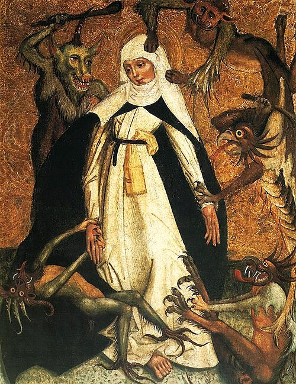

Siena — A Cidade de Catarina
Siena, no coração da Toscana italiana, é a cidade que gerou e moldou Santa Catarina. A cidade medieval, com seus becos estreitos, suas igrejas majestosas e seu espírito comunitário, foi o berço e o palco de toda a primeira parte de sua vida. Visitá-la é, de certa forma, segui-la nos passos.
Lugares Sagrados em Siena
Casa de Santa Catarina — Santuário
Endereço: Costa di Sant'Antonio, 6, Siena, Itália
A casa onde Catarina Benincasa nasceu, em 25 de março de 1347, foi transformada em santuário logo após sua canonização. O pai, Giacomo, era tintureiro — e os tanques de tintura ainda podem ser vistos no andar inferior.
O santuário inclui várias capelas construídas nos cômodos originais da casa:
- A Cappella delle Volte — o oratório pessoal onde Catarina orava e recebeu os estigmas invisíveis
- A Cappella della Cucina — onde ela prestava serviço aos pobres e doentes
- O Oratorium — com afrescos narrando sua vida
- A Igreja de Santa Catarina in Fontebranda — adjacente ao santuário
É um local de peregrinação permanente, aberto ao público. A entrada é gratuita.
⛪ Basílica de São Domingos (San Domenico)
Endereço: Piazza San Domenico, Siena, Itália
A imponente Basílica de São Domingos, construída a partir de 1226, foi o centro espiritual da vida de Santa Catarina. Foi nesta igreja que ela teve sua primeira visão de Cristo, aos 6 anos. Foi aqui que ela entrou para as Mantelatas, aos 16. E foi aqui que muitos de seus êxtases e milagres foram testemunhados.
A basílica guarda:
- A Capella Santa Caterina — com o relicário contendo a cabeça de Santa Catarina, trazida de Roma em 1383
- O famoso afresco de Andrea Vanni (c. 1375) — considerado o único retrato autêntico feito em vida, em que ela está representada com o hábito dominicano, segurando um lírio
- Afrescos de Il Sodoma narrando episódios de sua vida
- A Cappella delle Volte, onde ela recebeu a Comunhão e entrou em êxtase
Durante a festa de 29 de abril, a basílica realiza celebrações especiais e expõe a relíquia da cabeça para veneração.
Piazza del Campo
A magnífica Piazza del Campo, com sua forma de concha e o Palazzo Pubblico ao fundo, é o coração cívico de Siena. Catarina conhecia bem esta praça — ela era filha de uma cidade vibrante, politicamente agitada, dividida em bairros (contrade) que competiam ferozmente entre si.
A praça é palco do famoso Palio di Siena, a corrida de cavalos que reúne as 17 contrade da cidade — tradição que existia já no tempo de Catarina.
Basílica de Santa Maria sobre Minerva, Roma
Local: Roma, Itália (não em Siena, mas inseparável de Catarina)
O corpo de Santa Catarina repousa sob o altar principal da Basílica de Santa Maria sobre Minerva, em Roma, próxima ao Panteão. Ela faleceu em Roma em 29 de abril de 1380. Apenas sua cabeça foi enviada a Siena. Visitar esta basílica é encontrar seu túmulo.
A basílica também guarda obras de Fra Angelico e Michelangelo — uma das joias góticas de Roma.
Mapa dos Lugares Sagrados
Explore no mapa os principais locais ligados a Santa Catarina em Siena e na Itália.
🇧🇷 Santa Catarina de Sena no Brasil
A devoção a Santa Catarina de Sena chegou ao Brasil junto com os dominicanos e se espalhou por todo o país. Igrejas, paróquias, capelas e obras sociais carregam seu nome — testemunho vivo de uma fé que atravessou o Atlântico e floresceu em solo brasileiro.
🏛️ Mosteiro de Nossa Senhora do Rosário — Olinda/PE
Localização: Olinda, Pernambuco (Patrimônio Mundial UNESCO)
Fundado pelos dominicanos ainda no século XVI, o Convento de Olinda é o mais antigo mosteiro dominicano das Américas. A Ordem dos Pregadores — família religiosa de Santa Catarina — aqui se estabeleceu em 1558 e mantém viva a espiritualidade dominicana, que inclui a devoção à patrona terciária Catarina de Sena.
O convento abriga uma das mais belas igrejas barrocas do Brasil e é centro de estudos filosófico-teológicos da Ordem no Brasil.
⛪ Paróquia Santa Catarina de Sena — São Paulo/SP
Localização: Bairro Saúde, São Paulo, SP
Uma das paróquias paulistanas dedicadas à santa sienense. Como em muitas cidades do Brasil, a devoção a Santa Catarina está presente em comunidades de origem italiana — herança dos imigrantes italianos que trouxeram sua fé na padroeira da Itália para as terras brasileiras. A celebração da festa em 29 de abril costuma reunir fiéis de diversas gerações.
🏘️ Comunidades Dominicanas no Brasil
A Ordem dos Pregadores (Dominicanos) mantém presença ativa em várias cidades brasileiras. Dado que Santa Catarina pertenceu à Terceira Ordem de São Domingos, sua memória é especialmente venerada nas comunidades dominicanas:
- Convento de São Domingos — Vitória, ES: sede provincial dos dominicanos no Brasil, com forte devoção à santa
- Instituto Teológico São Domingos — Niterói, RJ: centro acadêmico dominicano com estudos sobre a mística sienense
- Irmãs Dominicanas — diversas cidades: congregações femininas de inspiração dominicana, com especial devoção a Catarina
- Leigos Dominicanos (Fraternidades da Terceira Ordem) — grupos espalhados por todo o Brasil que celebram a festa de 29 de abril
✨ Herança Italiana e Devoção Popular
Em cidades com forte imigração italiana — especialmente no Rio Grande do Sul (Caxias do Sul, Bento Gonçalves, Farroupilha), em Santa Catarina (Criciúma, Urussanga, Nova Veneza) e no interior de São Paulo — a devoção a Santa Catarina se fundiu com a identidade cultural ítalo-brasileira.
Capelas dedicadas à santa, festas paroquiais em 29 de abril, terzinas (procissões) e devoções privadas mantidas por famílias de descendência italiana mantêm viva essa tradição por gerações. O nome "Catarina" também é um dos mais comuns entre mulheres de descendência italiana no Sul do Brasil — homenagem à grande padroeira da Itália.
Em São Paulo, a histórica Igreja do Glicério (bairro Glicério, antiga colônia italiana) e outras igrejas ligadas à imigração têm imagens e devoções ligadas a Santa Catarina de Sena.
Locais no Brasil ligados à devoção a Santa Catarina de Sena
O mapa abaixo destaca algumas das principais comunidades, conventos e paróquias dedicados à santa ou com forte tradição dominicana no Brasil.
💡 Conhece uma igreja ou comunidade dedicada a Santa Catarina de Sena no Brasil? Entre em contato conosco para que possamos incluir no mapa e expandir este registro da devoção catarina no país.
🎨 Arte Sacra — Como os Pintores Retrataram Catarina
Ao longo dos séculos, artistas de toda a Europa retrataram a vida e os milagres de Santa Catarina. Aqui estão algumas das obras mais significativas:

Retrato de Santa Catarina — Andrea Vanni (c. 1375)
Localização: Basílica de São Domingos, Siena. Considerado o único retrato autêntico feito em vida. Catarina aparece de hábito dominicano, segurando um lírio branco, símbolo de sua pureza. O olhar é sereno e determinado.

Catarina Recebe os Estigmas
A cena mostra Catarina em êxtase diante de um crucifixo, com raios de luz convergindo sobre suas mãos, pés e lado — episódio ocorrido em Pisa em 1375. Uma das representações mais poéticas do evento milagroso.

Catarina Troca o Coração com Cristo — Giovanni di Paolo (c. 1447)
Giovanni di Paolo retrata o episódio místico em que Cristo teria "trocado de coração" com Catarina — metáfora de sua total transformação em amor. A cena transmite a intensidade da união espiritual entre a santa e o Senhor.

Estigmatização de Santa Catarina — Domenico Beccafumi (c. 1515)
Localização: Pinacoteca Nazionale, Siena. Beccafumi retrata o momento em que Catarina recebe os estigmas de Cristo, expressando em luz e movimento a profundidade do mistério. Uma das obras mais expressivas do Maneirismo senense.

Catarina Assediada pelos Demônios
Esta composição retrata as tentações e provações espirituais que Santa Catarina enfrentou em sua vida de oração. A santa, em meio a criaturas demoníacas, mantém a serenidade da fé — testemunho de sua inabalável confiança em Deus.

Santa Catarina de Sena — Giovanni Battista Tiepolo (séc. XVIII)
O mestre veneziano Giovanni Battista Tiepolo imortalizou Santa Catarina em seu estilo grandioso e luminoso. A composição rococó ressalta a glória mística da santa, com dramatismo de luz e movimento característicos do artista.

Santa Catarina de Sena — Baldassare Franceschini (séc. XVII)
Baldassare Franceschini, conhecido como "Il Volterrano", retratou a santa com a delicadeza característica do Barroco toscano. A obra expressa a devoção e a profundidade espiritual que definiram a vida de Catarina.
"Nada de grande se faz no mundo sem amor."
— Santa Catarina de Sena